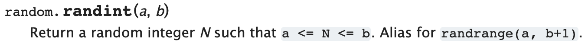

So far our guessing game has been a bit boring for us since we know the answer
already since we have to type it in ourselves.
What if we could get python to choose a random number?
Well we can, but first we need to learn about import.
There are loads of python features that are only accessible by using import.
Python uses import because it reduces clutter (mess) so our code
is clearer without getting confused with unfamiliar features.
When we import something we bring it into scope so we can use it.
To generate random numbers we need to import a module called random:
import random
Next we need to work out what function from random to use. To do this we
can look at the real documentation for this module here.
If we scroll down on this page we find this definition:

This wording is a bit confusing but essentially it means that we pass in two
numbers a and b and the function returns a number which is between a and b
inclusive (inclusive means that the number is not only between a and b but
it could also be a or b).
import random
random.randint(a, b)
Task
- Change your
secret_number in the guessing game to be a randomly generated
number between 1 and 99 (inclusive) using randint.
- If the user runs out of guesses tell them what the number was.
- Come up with a scoring system so that if the user guesses correctly they
get 100 points and then if they don't get it give them a score based on how close
they were to the actual number.
Hint: when we calculate the points we are probably going to do some sort
of subtraction to give us the distance from the correct answer. Unfortunately
depending on whether the guess was higher or lower than the answer the distance
may be negative or positive. To fix this we use a function called abs(x)
which takes in a value and if it's negative then it makes it positive.
If you get this working we should have a pretty good guessing game!
Try changing the number of allowed guesses and see if you can come up with any good strategies for winning.
Solution
If you've done and want to check your answer (or you have got really stuck)
then here is the solution to the final version of the guessing game.